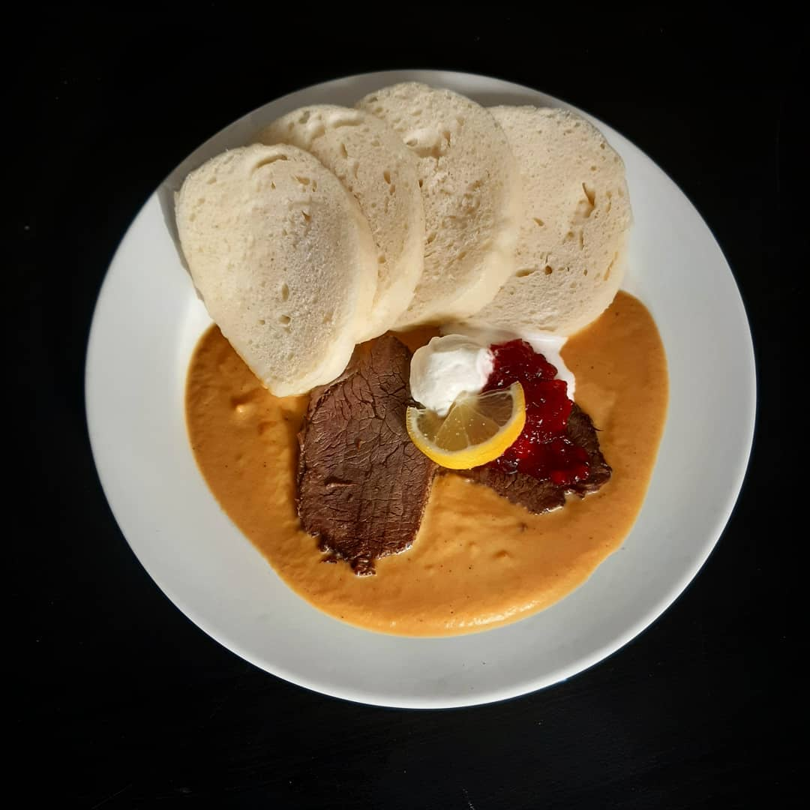

Sviečková na smotane podľa @jajfil — Normy Jedál
Sviečková na smotane
--------------------------------------------------------------------------------
Ingrediencie
750 g falošná hovädzia sviečkovica
500 g mrkva
400 g petržlen
2 ks citron
3 pl cukor
50 g bravčová masť
1 čl plnotučná horcica
5 ks nové korenie
Soľ
Brusnice
Šľahačka alebo šľahačková smotana
Postup
Hovädzie osolíme a opražíme z každej strany na rozpálenej masti. Vyberieme odložíme na bok. Zeleninu očistíme, nakrájané na malé kocky a opražíme o výpeku do zlatista. Trvá to asi pol hodiny. Pridáme nové korenie, horčicu, vložíme späť opražené mäso a zalejeme vodou do ¾ výšky mäsa. Počkáme až začne vrieť potom zakryjeme a dáme piecť do rúry na 200°C na 2 h, alebo v tlakovom hrnci na 45 min. Od dosiahnutia tlaku. Keď je mäso mäkké vyberieme na bok. Zo zeleniny vyberieme nové korenia a rozmuxujeme ponorným mixérom. Nalejeme smotanu, dochutíme cukrom a osolíme. Ked omáčka začne vrieť, podľa hustoty nariedime vriacou vodou a aj tak ešte minútku prevaríme. Odstavíme a dochutíme citrónovou šťavou. Podávame so šľahačkou, brusnicami a kúskom citróna.
#Svieckova#svieckovanasmotane#vegetable#omacka#hovadzie#svickova#knedlik#obed#lunch#food#jedlo#recipe#recept#varimdoma#dobruchut#